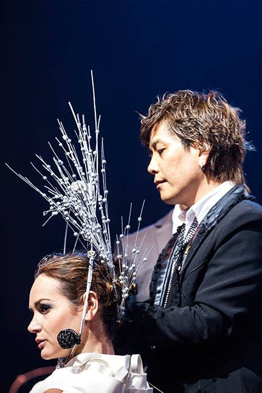
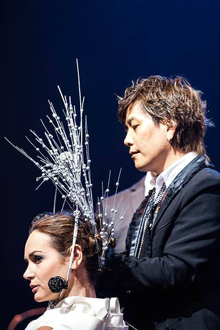

今日推荐
明星发型师
赖维安是一位由发型艺术家发展到发型舞台艺术的创始人。 他出生于60年代，现在担任香港环球美发美容协会的主席。 他擅长剪发和发型秀跳舞，比较注重现场效果，但是缺乏实用性。 自己也有独立的品牌，具有较高的专业知识水平和知名度， 主要跟着欧美潮流。喜欢他的人大多数都是30岁以上的发型师， 内行人比较多。
张景惠在16岁的时候就进入美发届，他出生于60年代， 在90年代成为新一代晚装创造的先驱者，被评为中国“晚装王子”。 现在在广州天鹰发型美容学校担任校长一职。 张景惠比较擅长盘发和发型秀，也是重视现场艺术效果， 缺乏实用性。拥有自己的品牌，紧跟欧美和日韩的潮流。 有较高的专业领域知名度，喜欢他的人也都是内行人。
 

徐全有是中国美业第一人，现在经营超过一千家的审美造型连锁店。 他也是出生于60年代，美发技术一般，但梦想很大，号称要办亚 洲最大的学校和世界最大的连锁机构。拥有自己的品牌，紧跟潮流。
刘金汨现在的名气也是越 发旺盛，喜欢他的都是比较年 轻的发型师，他比较擅长百变发型， 以剪发为强项，发型秀有 很高的实用性。